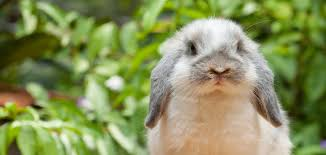
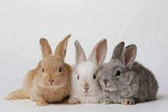

rabbit world
rabbit world
Hallo evrybody! check out our website! Here there are a lot of rabbits up for adoption and you could be the proud owner!

Lola
Lola it's a precious rabbit with a big hearth, she's been
trough alot in her life and she's just 2 years old!
She behaves ok with other pets too, if you want to adopt
her call:
+39 098 765 234

Pippo
Pippo is a sweet boy, a little bit active,
spiteful and he bits around but he's just 3 month old!
Don't get me wrong, he's so cuddly and soft! if you want
to adopt him call:
+39 123 543 665

Gigi, Dudu and Lillu
Gigi, Dudu and Lillu are three little babies of just 2 months,
they are inseparable peraphs they are up for odoption all toghether.
Because of the young age it is impossible to tell theyr personalities,
but for now they are so sleepy and calm!
to adopt them call:
+39 364 456 876